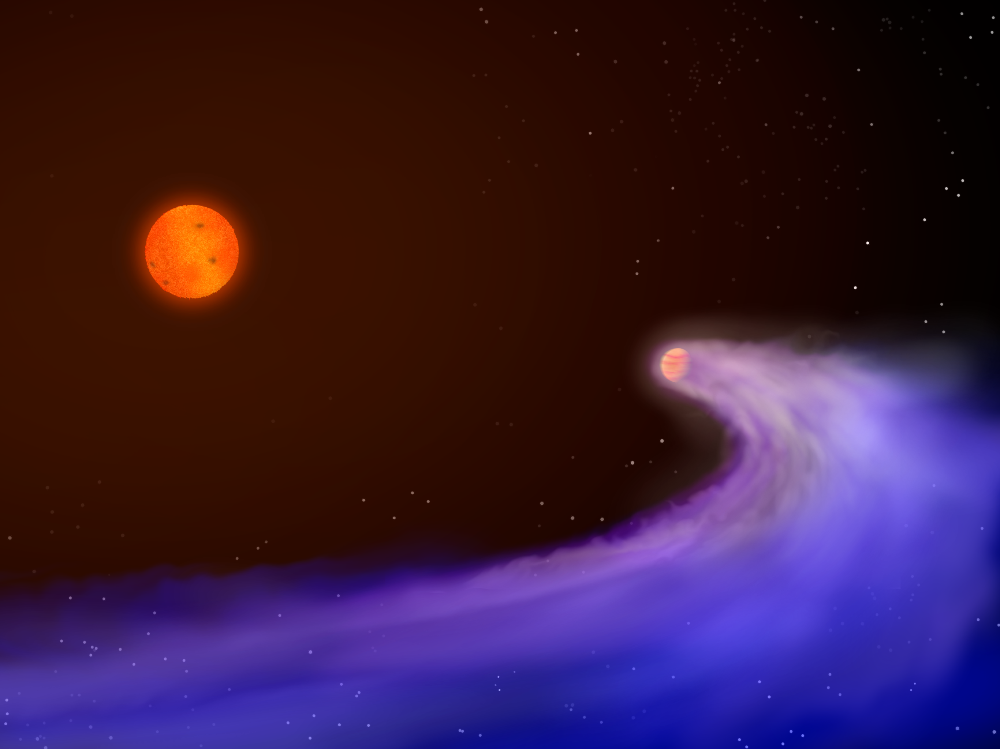
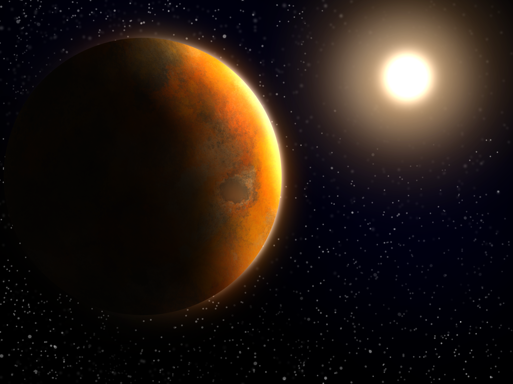
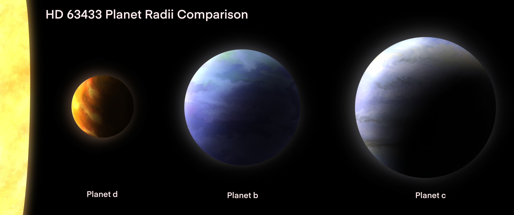
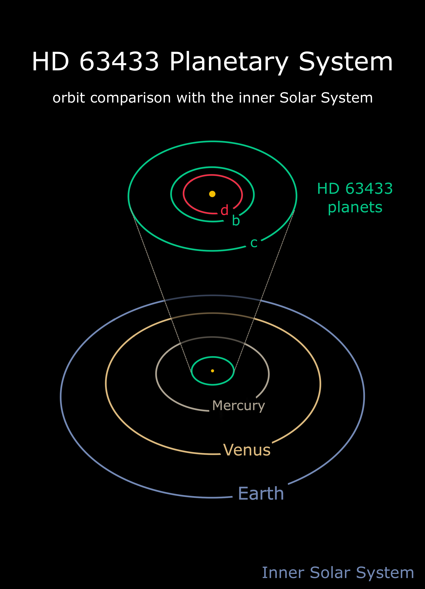
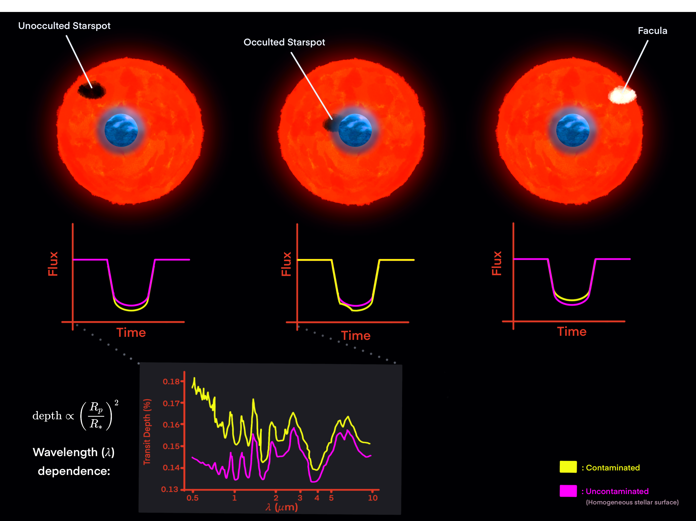

Scientific Visualizations
Illustrations, animations and renders created by me to communicate and explore mine and others' astronomical research.
Tools used include: Procreate, Blender, Pixelmator Pro, Python, Keynote, and Photoshop

Visualization of atmospheric escape from an ultra-hot Jupiter exoplanet. The planet's atmosphere is being stripped away by the intense radiation from its host star, creating a comet-like tail of escaping gas. This process can significantly impact the evolution and habitability of rocky exoplanets, but is easiest to observe on gas giant planets with inflated atmospheres. (Inspired by the illustration GJ 436 b by Mark Garlick/University of Warwick)

Concept art of HD 63433d, an Earth-sized exoplanet (1.25 Earth Masses) with a closely orbiting a Sun-like star in the 400 Myr Ursa Major Moving Group. Due to its proximity to its host star, this planet is likely tidally locked with an extemely hot or even molten surface that faces its host star. Our team reports on the discovery of this planet in our 2024 publication.

Radii comparison of the three planets in the HD 63433 system. While planet d is fairly Earth-sized (1.073 Earth Radii), its previously detected companions planets b and c are closer to Neptune-sized. While the relative radii of the planets is accurate, color choices for these planets are artistic rather than scientific.

Orbit comparison of the HD 63433 three-planet system to our Inner Solar System planets. All three of the planets orbit close to their Sun-like star, falling within the orbit of Mercury. HD 63433d, the innermost Earth-sized planet detected by our team (red), orbits with a period of only 4 days!

A simplified diagram illustrating the "transit light source effect" — the influence of stellar activity on exoplanet transmission spectra. Top: The unocculted starspot, occulted starspot, and unocculted facula scenarios relative to a transiting exoplanet (scales exaggerated). Middle: The corresponding effect on the transit light curve (yellow) vs. a homogeneous stellar surface (magenta). Unocculted spots deepen the transit; occulted spots deepen it and produce a flux bump; faculae decrease the transit depth. Bottom: Effect of a large unocculted starspot on a transmission spectrum (transit depth vs. wavelength). The contaminated spectrum (yellow) overestimates transit depth at all wavelengths, with the strongest effect at shorter wavelengths. Based on model results from Thompson et al. (2024).
Simulation of circumstellar disk material producing the characteristic dipping variability observed in Dipper Stars, young stellar objects that dim by 10–50%.